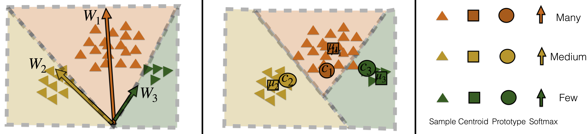
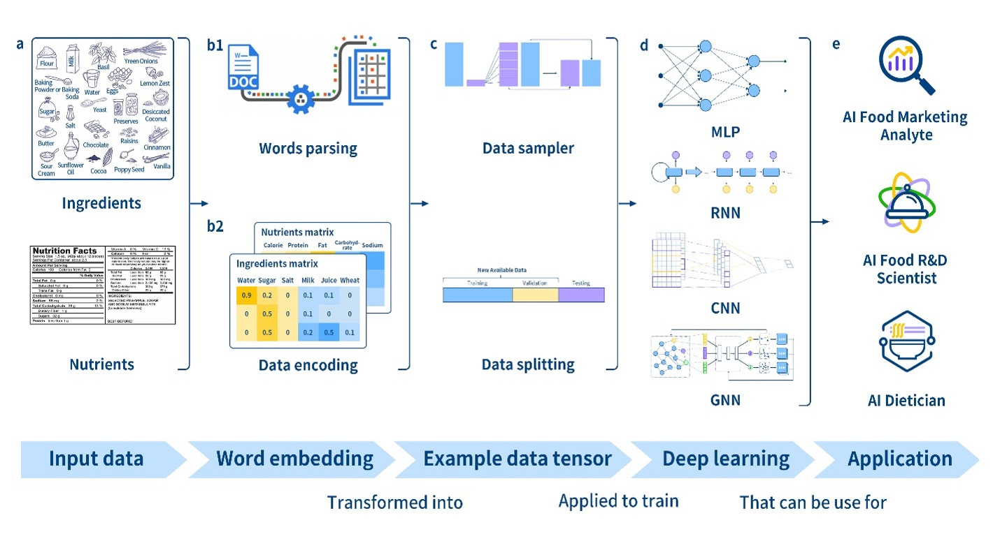

Publications
|
UMDFood: Vision-language models boost food composition compilation
Peihua Ma*, Yixin Wu*, Ning Yu, Yang Zhang, Michael Backes, Qin Wang, Cheng-I Wei arXiv 2023 |
|
UniControl: A Unified Diffusion Model for Controllable Visual Generation In the Wild
Can Qin, Shu Zhang, Ning Yu, Yihao Feng, Xinyi Yang, Yingbo Zhou, Huan Wang, Juan Carlos Niebles, Caiming Xiong, Silvio Savarese, Stefano Ermon, Yun Fu, Ran Xu arXiv 2023 pdf project code press |
|
|
ULIP-2: Towards Scalable Multimodal Pre-training For 3D Understanding
Le Xue, Ning Yu, Shu Zhang, Junnan Li, Roberto Martín-Martín, Jiajun Wu, Caiming Xiong, Ran Xu, Juan Carlos Niebles, Silvio Savarese arXiv 2023 pdf code blog press |
|
|
LayoutDETR: Detection Transformer Is a Good Multimodal Layout Designer
Ning Yu, Chia-Chih Chen, Zeyuan Chen, Rui Meng, Gang Wu, Paul Josel, Juan Carlos Niebles, Caiming Xiong, Ran Xu arXiv 2023 pdf project code |
|
|
GlueGen: Plug and Play Multi-modal Encoders for X-to-image Generation
Can Qin, Ning Yu, Chen Xing, Shu Zhang, Zeyuan Chen, Stefano Ermon, Yun Fu, Caiming Xiong, Ran Xu arXiv 2023 pdf project code |
|
|
HIVE: Harnessing Human Feedback for Instructional Visual Editing
Shu Zhang*, Xinyi Yang*, Yihao Feng*, Can Qin, Chia-Chih Chen, Ning Yu, Zeyuan Chen, Huan Wang, Silvio Savarese, Stefano Ermon, Caiming Xiong, Ran Xu arXiv 2023 pdf project code |
|
Model-Agnostic Hierarchical Attention for 3D Object Detection
Manli Shu, Le Xue, Ning Yu, Roberto Martín-Martín, Juan Carlos Niebles, Caiming Xiong, Ran Xu arXiv 2023 |
|
|
DE-FAKE: Detection and Attribution of Fake Images Generated by Text-to-Image Diffusion Models
Zeyang Sha, Zheng Li, Ning Yu, Yang Zhang CCS 2023 |
|
Generated Graph Detection
Yihan Ma, Zhikun Zhang, Ning Yu, Xinlei He, Michael Backes, Yun Shen, Yang Zhang ICML 2023 pdf code |
|
Detecting Adversarial Faces Using Only Real Face Self-Perturbations
Qian Wang, Yongqin Xian, Hefei Ling, Jinyuan Zhang, XiaoRui Lin, Ping Li, Jiazhong Chen, Ning Yu IJCAI 2023 pdf code video |
|  |
Learning Prototype Classifiers for Long-Tailed Recognition
Saurabh Sharma, Yongqin Xian, Ning Yu, Ambuj Singh IJCAI 2023 pdf code |
|
|
Mask-free OVIS: Open-Vocabulary Instance Segmentation without Manual Mask Annotations
Vibashan VS, Ning Yu, Chen Xing, Can Qin, Mingfei Gao, Juan Carlos Niebles, Vishal Patel, Ran Xu CVPR 2023 pdf project code poster blog |
|
Can’t Steal? Cont-Steal! Contrastive Stealing Attacks Against Image Encoders
Zeyang Sha, Xinlei He, Ning Yu, Michael Backes, Yang Zhang CVPR 2023 |
|
RoSteALS: Robust Steganography using Autoencoder Latent Space
Tu Bui, Shruti Agarwal, Ning Yu, John Collomosse CVPR Workshop on Media Forensics 2023 pdf code Huggingface space poster |
|
UnGANable: Defending Against GAN-based Face Manipulation
Zheng Li, Ning Yu, Ahmed Salem, Michael Backes, Mario Fritz, Yang Zhang USENIX 2023 pdf code poster |
|
Keys to Better Image Inpainting: Structure and Texture Go Hand in Hand
Jitesh Jain*, Yuqian Zhou*, Ning Yu, Humphrey Shi WACV 2023 pdf project code demo Huggingface space poster slides |
|
Unsupervised Dense Retrieval Deserves Better Positive Pairs: Scalable Augmentation with Query Extraction and Generation
Rui Meng, Ye Liu, Semih Yavuz, Divyansh Agarwal, Lifu Tu, Ning Yu, Jianguo Zhang, Meghana Bhat, Yingbo Zhou arXiv 2022 |
|
SimSCOOD: Systematic Analysis of Out-of-Distribution Behavior of Source Code Models
Hossein Hajipour, Ning Yu, Cristian-Alexandru Staicu, Mario Fritz arXiv 2022 |
|
|
Membership Inference Attacks Against Text-to-image Generation Models
Yixin Wu, Ning Yu, Zheng Li, Michael Backes, Yang Zhang arXiv 2022 |
|
|
Auditing Membership Leakages of Multi-Exit Networks
Zheng Li, Yiyong Liu, Xinlei He, Ning Yu, Michael Backes, Yang Zhang CCS 2022 pdf code slides |
|
RepMix: Representation Mixing for Robust Attribution of Synthesized Images
Tu Bui, Ning Yu, John Collomosse ECCV 2022 pdf code poster video |
|  |
Deep Learning Accurately Predicts Food Categories and Nutrients Based on Ingredient Statements
Peihua Ma, Zhikun Zhang, Ying Li, Ning Yu, Jiping Sheng, Hande Küçük McGinty, Qin Wang, Jaspreet Ahuja Food Chemistry 2022 |
|
|
Responsible Disclosure of Generative Models Using Scalable Fingerprinting
Ning Yu*, Vladislav Skripniuk*, Dingfan Chen, Larry Davis, Mario Fritz ICLR 2022 Spotlight pdf project code poster video press |
|
RelaxLoss: Defending Membership Inference Attacks without Losing Utility
Dingfan Chen, Ning Yu, Mario Fritz ICLR 2022 Spotlight pdf code poster video press |
|
|
Human-Centric Deep Generative Models: The Blessing and The Curse
Ning Yu Ph.D. Dissertation 2021, University of Maryland and Max Planck Institute for Informatics |
|
Deep Video Inpainting Detection
Peng Zhou, Ning Yu, Zuxuan Wu, Larry Davis, Abhinav Shrivastava, Ser-Nam Lim BMVC 2021 pdf code video |
|
|
Artificial Fingerprinting for Generative Models: Rooting Deepfake Attribution in Training Data
Ning Yu*, Vladislav Skripniuk*, Sahar Abdelnabi, Mario Fritz ICCV 2021 Oral pdf project code poster video press |
|
Dual Contrastive Loss and Attention for GANs
Ning Yu, Guilin Liu, Aysegul Dundar, Andrew Tao, Bryan Catanzaro, Larry Davis, Mario Fritz ICCV 2021 pdf project code poster video press |
|
|
Beyond the Spectrum: Detecting Deepfakes via Re-Synthesis
Yang He, Ning Yu, Margret Keuper, Mario Fritz IJCAI 2021 pdf project code video press |
|
Hijack-GAN: Unintended-Use of Pretrained, Black-Box GANs
Hui-Po Wang, Ning Yu, Mario Fritz CVPR 2021 pdf project code poster video press |
|
|
Application of Deep Learning for Image-based Chinese Market Food Nutrients Estimation
Peihua Ma, Chun Pong Lau, Ning Yu, An Li, Jiping Sheng Food Chemistry 2021 |
|
|
Image-based Nutrient Estimation for Chinese Dishes Using Deep Learning
Peihua Ma, Chun Pong Lau, Ning Yu, An Li, Ping Liu, Qin Wang, Jiping Sheng Food Research International 2021 pdf press |
|
|
Application of Machine Learning for Predicting Label Nutrients Using USDA Global Branded Food Products Database (BFPD)
Peihua Ma, An Li, Ning Yu, Ying Li, Rahul Bahadur, Qin Wang, Jaspreet Ahuja Journal of Food Composition and Analysis 2021 pdf press |
|
Long-Tailed Recognition Using Class-Balanced Experts
Saurabh Sharma, Ning Yu, Mario Fritz, Bernt Schiele GCPR 2020 pdf code video |
|
|
GAN-Leaks: A Taxonomy of Membership Inference Attacks against GANs
Dingfan Chen, Ning Yu, Yang Zhang, Mario Fritz CCS 2020 pdf code poster video (short) video (full) |
|
Inclusive GAN: Improving Data and Minority Coverage in Generative Models
Ning Yu, Ke Li, Peng Zhou, Jitendra Malik, Larry Davis, Mario Fritz ECCV 2020 pdf project code video (short) video (full) press |
|
|
Attributing Fake Images to GANs: Learning and Analyzing GAN Fingerprints
Ning Yu, Larry Davis, Mario Fritz ICCV 2019 pdf project code poster press |
|
Texture Mixer: A Network for Controllable Synthesis and Interpolation of Texture
Ning Yu, Connelly Barnes, Eli Shechtman, Sohrab Amirghodsi, Michal Lukáč CVPR 2019 pdf project code poster press |
|
Learning to Detect Multiple Photographic Defects
Ning Yu, Xiaohui Shen, Zhe Lin, Radomír Měch, Connelly Barnes WACV 2018 pdf supp project code poster slides |
|
Supervoxel-Based Hierarchical Markov Random Field Framework for Multi-Atlas Segmentation
Ning Yu, Hongzhi Wang, Paul Yushkevich MICCAI Workshop 2016 pdf project slides |
|
|
A Superpixel-Based Framework for Automatic Tumor Segmentation on Breast DCE-MRI
Ning Yu, Jia Wu, Susan Weinstein, Bilwaj Gaonkar, Brad Keller, Ahmed Ashraf, YunQing Jiang, Christos Davatzikos, Emily Conant, Despina Kontos SPIE Medical Imaging 2015 Oral, best student paper finalist pdf project slides press |
|
|
Quantification of Tumor Changes during Neoadjuvant Chemotherapy with Longitudinal Breast DCE-MRI Registration
Jia Wu, Yangming Ou, Susan Weinstein, Emily Conant, Ning Yu, Vahid Hoshmand, Brad Keller, Ahmed Ashraf, Mark Rosen, Angela DeMichele, Christos Davatzikos, Despina Kontos SPIE Medical Imaging 2015 pdf 、 |
|
|
Tumor Heterogeneity Patterns of DCE-MRI Parametric Response Maps May Augment Early Assessment of Neoadjuvant Chemotherapy: A Pilot Study of ACRIN 6657/I-SPY 1
Jia Wu, Susan Weinstein, Andrew Oustimov, Lauren Pantalone, Ning Yu, Yangming Ou, Mark Rosen, Angela DeMichele, Christos Davatzikos, Despina Kontos RSNA 2015 |
|
|
A Feasibility Study Investigating the Use of Quantitative Measures of Spatio-Temporal Tumor Heterogeneity Derived from 4D Breast DCE-MRI Registration as a Biomarker of Response to Neoadjuvant Chemotherapy
Jia Wu, Yangming Ou, Susan Weinstein, Emily Conant, Ning Yu, Vahid Hoshmand, Brad Keller, Ahmed Ashraf, Mark Rosen, Angela DeMichele, Christos Davatzikos, Despina Kontos ISMRM Workshop 2014 |
|
|
Robust Feature Points Correspondences for Visual Object Tracking
Ning Yu Undergraduate Thesis 2013, Huazhong University of Science and Technology pdf project slides |
Patents
Systems and Methods for Unsupervised Training in Text Retrieval Tasks
Rui Meng, Yingbo Zhou, Ye Liu, Semih Yavuz, Ning Yu
US Application No. 18,303,313
Rui Meng, Yingbo Zhou, Ye Liu, Semih Yavuz, Ning Yu
US Application No. 18,303,313
Systems and Methods for Multimodal Layout Designs of Digital Publications
Ning Yu, Chia-Chih Chen, Zeyuan Chen, Caiming Xiong, Ran Xu, Juan Carlos Niebles, Rui Meng
US Application No. 18,161,680
Ning Yu, Chia-Chih Chen, Zeyuan Chen, Caiming Xiong, Ran Xu, Juan Carlos Niebles, Rui Meng
US Application No. 18,161,680
Systems and Methods for Text-to-Image Generation Using Language Models
Ning Yu, Can Qin, Chen Xing, Shu Zhang, Stefano Ermon, Caiming Xiong, Ran Xu
US Application No. 18,162,535
Ning Yu, Can Qin, Chen Xing, Shu Zhang, Stefano Ermon, Caiming Xiong, Ran Xu
US Application No. 18,162,535
Systems and Methods for Open-Vocabulary Instance Segmentation
Ning Yu, Vibashan VS, Chen Xing, Juan Carlos Niebles, Ran Xu
US Application No. 18,159,318
Ning Yu, Vibashan VS, Chen Xing, Juan Carlos Niebles, Ran Xu
US Application No. 18,159,318
Systems and Methods for Attention Mechanism in Three-Dimensional Object Detection
Manli Shu, Le Xue, Ning Yu, Roberto Martín-Martín, Juan Carlos Niebles, Caiming Xiong, Ran Xu
US Application No. 18,161,661
Manli Shu, Le Xue, Ning Yu, Roberto Martín-Martín, Juan Carlos Niebles, Caiming Xiong, Ran Xu
US Application No. 18,161,661
Neural Network Training Technique
Guilin Liu, Ning Yu, Aysegul Dundar, Andrew Tao, Bryan Catanzaro
US Application No. 17,165,745
Guilin Liu, Ning Yu, Aysegul Dundar, Andrew Tao, Bryan Catanzaro
US Application No. 17,165,745
Texture Interpolation Using Neural Networks
Connelly Barnes, Sohrab Amirghodsi, Michal Lukáč, Eli Shechtman, Ning Yu
US Patent No. 10,818,043
pdf
Connelly Barnes, Sohrab Amirghodsi, Michal Lukáč, Eli Shechtman, Ning Yu
US Patent No. 10,818,043
Digital Image Defect Identification and Correction
Radomír Měch, Ning Yu, Xiaohui Shen, Zhe Lin
US Patent No. 10,810,721
pdf
Radomír Měch, Ning Yu, Xiaohui Shen, Zhe Lin
US Patent No. 10,810,721
Selected Awards
[2022] ICML'22 Top Reviewer
[2021] Twitch (Amazon) Research Fellowship
[2020] Qualcomm Innovation Fellowship Finalist
[2019] Qualcomm Innovation Fellowship Finalist
[2015] SPIE Best Student Paper Finalist
[2015] SPIE Travel Scholarship
[2012] Chinese National Fellowship
[2012] Microsoft Young Fellowship
[2012] Meritorious Winner of the Mathematical Contest in Modeling
[2011] 2nd Prize of the Chinese Mathematical Contest in Modeling
[2021] Twitch (Amazon) Research Fellowship
[2020] Qualcomm Innovation Fellowship Finalist
[2019] Qualcomm Innovation Fellowship Finalist
[2015] SPIE Best Student Paper Finalist
[2015] SPIE Travel Scholarship
[2012] Chinese National Fellowship
[2012] Microsoft Young Fellowship
[2012] Meritorious Winner of the Mathematical Contest in Modeling
[2011] 2nd Prize of the Chinese Mathematical Contest in Modeling
Mentoring
Yijiang Li @JHU
Gong Zhang @GaTech
Kai Wang @GaTech
Shiyu Wang @Emory
Artemis Panagopoulou @UPenn
You-Ming Chang @NCTU
Chen Yeh @NCTU
Qian Wang @HUST
Minxing Zhang @CISPA
Akash Gokul @Berkeley
Manli Shu @UMD
Vibashan VS @JHU
Can Qin @NEU
Yuan Xin @CISPA
Yixin Wu @CISPA
Shuo Wen @MPI-INF
Zeyang Sha @CISPA
Yihan Ma @CISPA
Jitesh Jain @IIT
Zheng Li @CISPA
Vladislav Skripniuk @Audatic
Hui-Po Wang @CISPA
Dingfan Chen @CISPA
Saurabh Sharma @UCSB
Gong Zhang @GaTech
Kai Wang @GaTech
Shiyu Wang @Emory
Artemis Panagopoulou @UPenn
You-Ming Chang @NCTU
Chen Yeh @NCTU
Qian Wang @HUST
Minxing Zhang @CISPA
Akash Gokul @Berkeley
Manli Shu @UMD
Vibashan VS @JHU
Can Qin @NEU
Yuan Xin @CISPA
Yixin Wu @CISPA
Shuo Wen @MPI-INF
Zeyang Sha @CISPA
Yihan Ma @CISPA
Jitesh Jain @IIT
Zheng Li @CISPA
Vladislav Skripniuk @Audatic
Hui-Po Wang @CISPA
Dingfan Chen @CISPA
Saurabh Sharma @UCSB
Chairing
| CVPR area chair | 2023,2024 |
| ICCV area chair | 2023 |
| NeurIPS area chair | 2023 |
| ICML session chair | 2022 |
| AAAI senior program committee | 2023,2024 |
| AISTATS area chair | 2023 |
| BMVC area chair | 2022,2023 |
| WACV area chair | 2023 |
Reviewing
| CVPR | since 2020 |
| ICCV | since 2019 |
| ECCV | since 2020 |
| NeurIPS | since 2021 |
| ICML | since 2021 |
| ICLR | since 2022 |
| AAAI | since 2020 |
| IJCAI | since 2020 |
| SIGGRAPH | since 2021 |
| Eurographics | since 2020 |
| ICRA | since 2020 |
| TPAMI | since 2019 |
| IJCV | since 2021 |
| TOG | since 2020 |
| PR Letters | since 2020 |
| Neurocomputing | since 2019 |
| TVCJ | since 2018 |
Teaching
@University of Virginia
Computer Graphics
Operating Systems
Information Technology
@University of Pennsylvania
Probability Theory
Computer Graphics
Operating Systems
Information Technology
@University of Pennsylvania
Probability Theory